Java多线程进阶（九）—— J.U.C之locks框架：AQS共享功能剖析(4)
一、本章概述
AQS系列的前三个章节，我们通过ReentrantLock的示例，分析了AQS的独占功能。
本章将以CountDownLatch为例，分析AQS的共享功能。CountDownLatch，是J.U.C中的一个同步器类，可作为倒数计数器使用，关于CountDownLatch的使用和说明，读者可以参考：
Java多线程进阶（十八）—— J.U.C之synchronizer框架：CountDownLatch。
CountDownLatch示例
假设现在有3个线程，ThreadA、ThreadB、mainThread，CountDownLatch初始计数为1：
CountDownLatch switcher = new CountDownLatch(1);
线程的调用时序如下：
// ThreadA调用await()方法等待
// ThreadB调用await()方法等待
// 主线程main调用countDown()放行
二、AQS共享功能的原理
1. 创建CountDownLatch
CountDownLatch的创建没什么特殊，调用唯一的构造器，传入一个初始计数值，内部实例化一个AQS子类：
CountDownLatch switcher = new CountDownLatch(1);
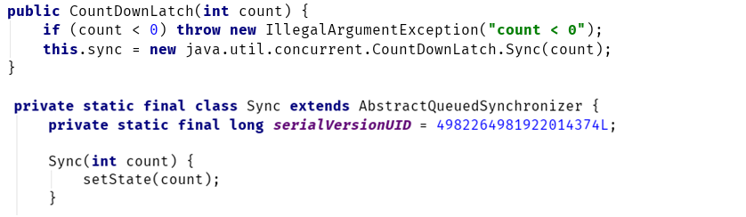
可以看到，初始计数值count其实就是同步状态值，在CountDownLatch中，同步状态State表示CountDownLatch的计数器的初始大小。
2. ThreadA调用await()方法等待
CountDownLatch的await方法是响应中断的，该方法其实是调用了AQS的acquireSharedInterruptibly方法：
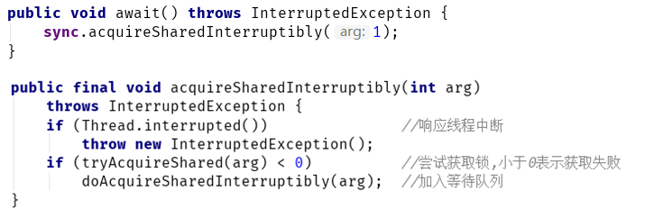
注意tryAcquireShared方法，该方法尝试获取锁，由AQS子类实现，其返回值的含义如下：
| State | 资源的定义 |
|---|---|
| 小于0 | 表示获取失败 |
| 0 | 表示获取成功 |
| 大于0 | 表示获取成功，且后继争用线程可能成功 |
CountDownLatch中的tryAcquireShared实现相当简单，当State值为0时，永远返回成功：
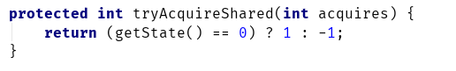
我们之前说了在CountDownLatch中，同步状态State表示CountDownLatch的计数器的初始值，当
State==0时，表示无锁状态，且一旦State变为0，就永远处于无锁状态了，此时所有线程在await上等待的线程都可以继续执行。
而在ReentrantLock中，State==0时，虽然也表示无锁状态，但是只有一个线程可以重置State的值。这就是共享锁的含义。
好了，继续向下执行，ThreadA尝试获取锁失败后，会调用doAcquireSharedInterruptibly：
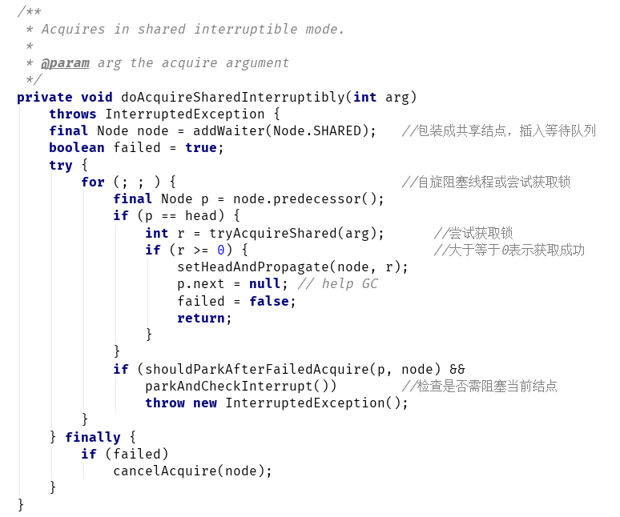
首先通过addWaiter方法，将ThreadA包装成共享结点，插入等待队列，插入完成后队列结构如下：
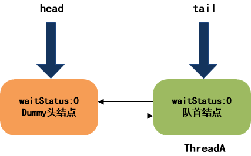
然后会进入自旋操作，先尝试获取一次锁，显然此时是获取失败的（主线程main还未调用countDown，同步状态State还是1）。
然后判断是否要进入阻塞（shouldParkAfterFailedAcquire）：
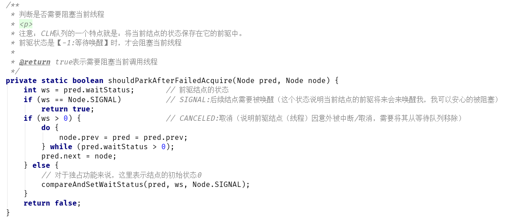
好了，至此，ThreadA进入阻塞态，最终队列结构如下：
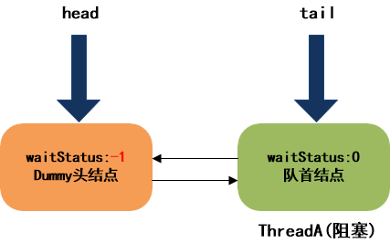
3. ThreadB调用await()方法等待
流程和步骤2完全相同，调用后ThreadB也被加入到等待队列中：
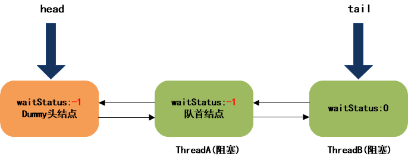
4. 主线程main调用countDown()放行
ThreadA和ThreadB调用了await()方法后都在等待了，现在主线程main开始调用countDown()方法，该方法调用后，ThreadA和ThreadB都会被唤醒，并继续往下执行，达到类似门栓的作用。
来看下countDown方法的内部：
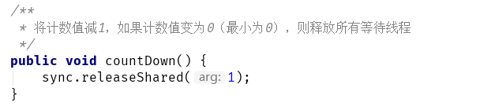
该方法内部调用了AQS的releaseShared方法，先尝试一次释放锁，tryReleaseShared方法是一个钩子方法，由CountDownLatch实现，当同步State状态值首次变为0时，会返回true：
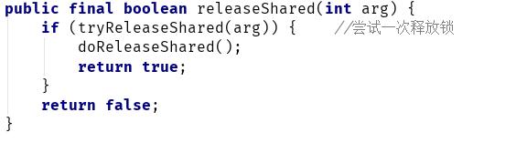
先调用compareAndSetWaitStatus将头结点的等待状态置为0，表示将唤醒后续结点（ThreadA），成功后的等待队列结构如下：
然后调用unparkSuccessor唤醒后继结点（ThreadA被唤醒后会从原阻塞处继续往下执行，这个在步骤5再讲）：
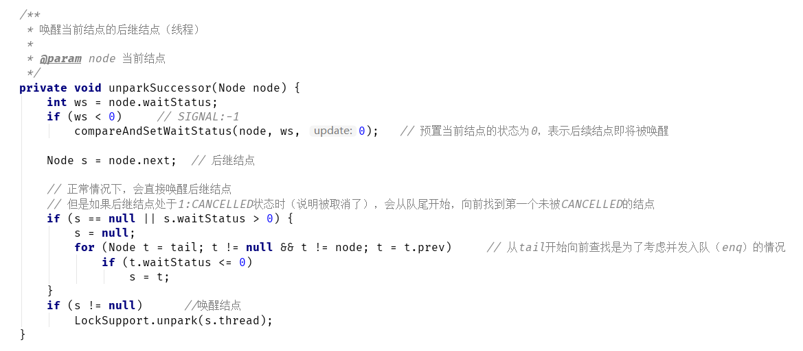
此时，等待队列结构如下：
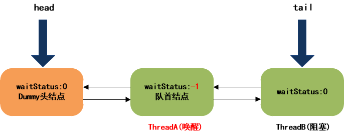
5. ThreadA从原阻塞处继续向下执行
ThreadA被唤醒后，会从原来的阻塞处继续向下执行：
由于是一个自旋操作，ThreadA会再次尝试获取锁，由于此时State同步状态值为0（无锁状态），所以获取成功。然后调用setHeadAndPropagate方法：
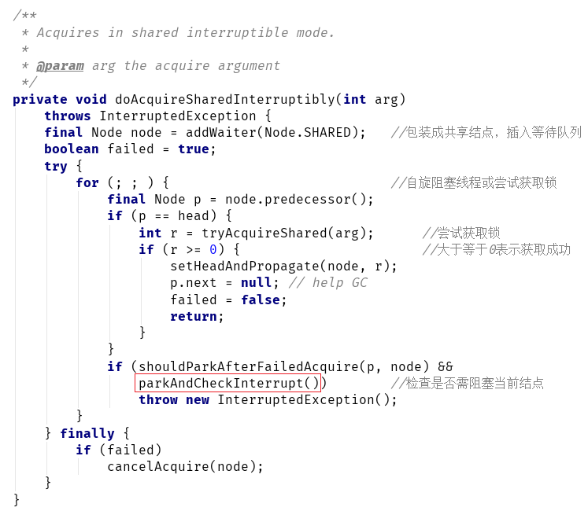
setHeadAndPropagate方法把ThreadA结点变为头结点，并根据传播状态判断是否要唤醒并释放后继结点：
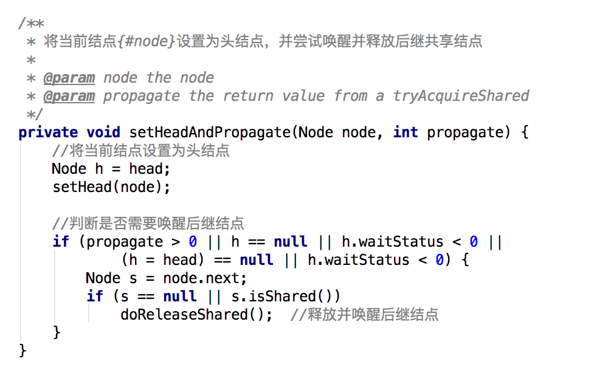
①将ThreadA变成头结点
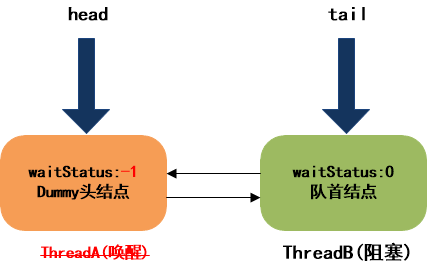
②调用doReleaseShared方法，释放并唤醒ThreadB结点
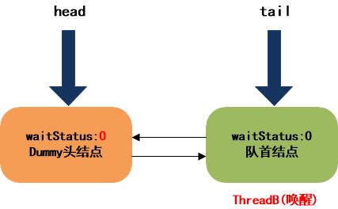
6. ThreadB从原阻塞处继续向下执行
ThreadB被唤醒后，从原阻塞处继续向下执行，这个过程和步骤5（ThreadA唤醒后继续执行）完全一样。
setHeadAndPropagate方法把ThreadB结点变为头结点，并根据传播状态判断是否要唤醒并释放后继结点：
①将ThreadB变成头结点
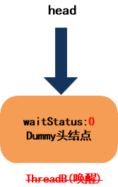
②调用doReleaseShared方法，释放并唤醒后继结点（此时没有后继结点了，则直接break）：
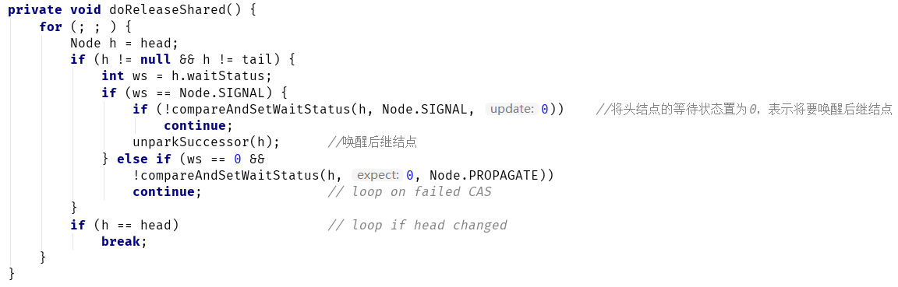
最终队列状态如下：

三、总结
AQS的共享功能，通过钩子方法tryAcquireShared暴露，与独占功能最主要的区别就是：
共享功能的结点，一旦被唤醒，会向队列后部传播（Propagate）状态，以实现共享结点的连续唤醒。这也是共享的含义，当锁被释放时，所有持有该锁的共享线程都会被唤醒，并从等待队列移除。